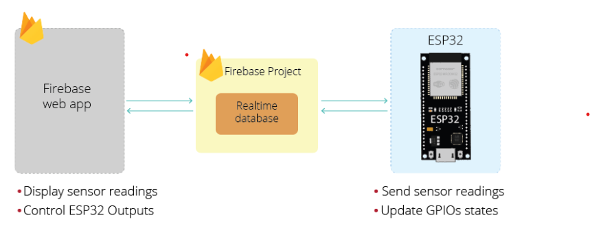
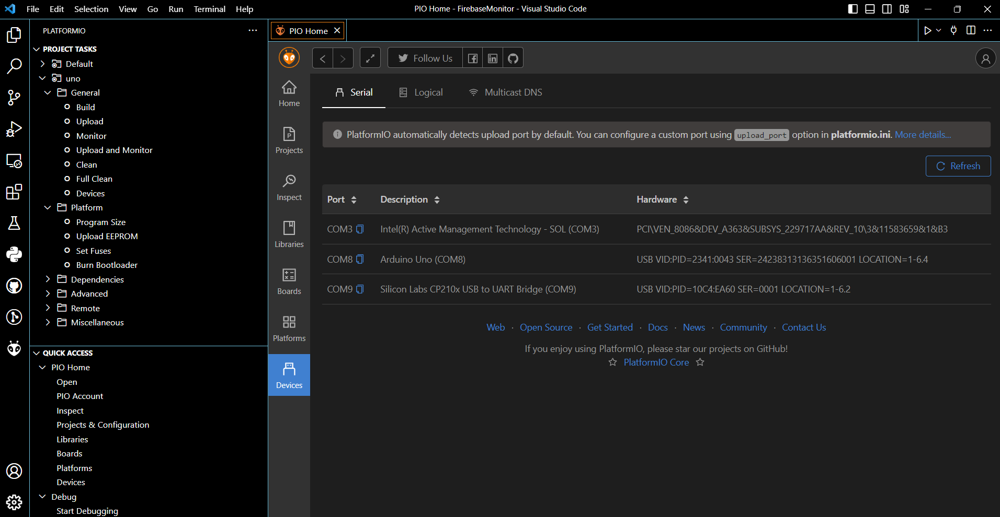
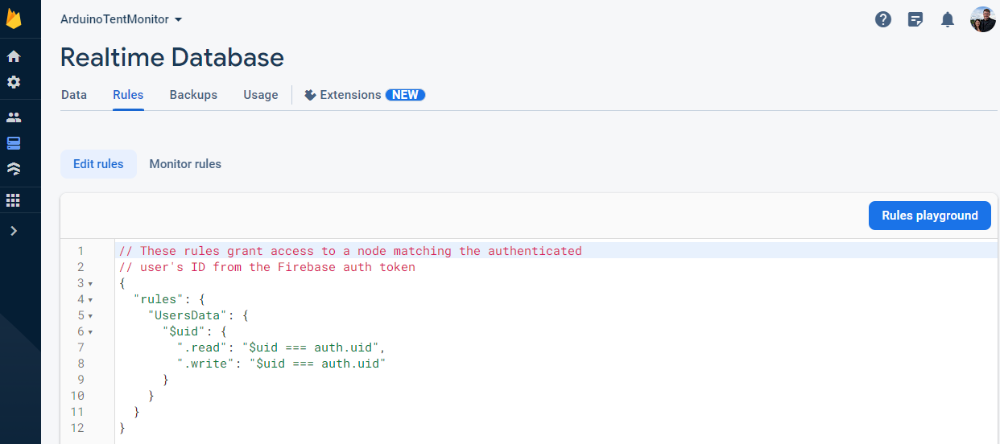
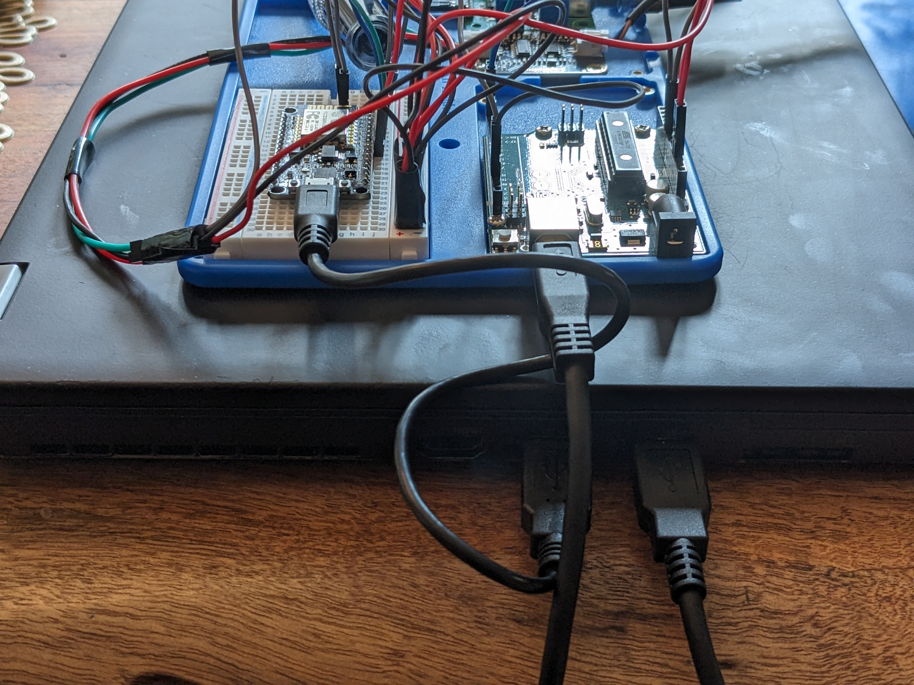
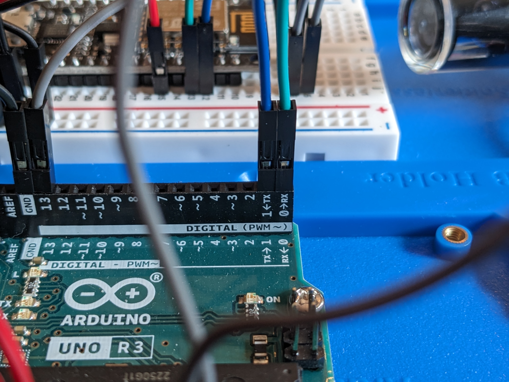
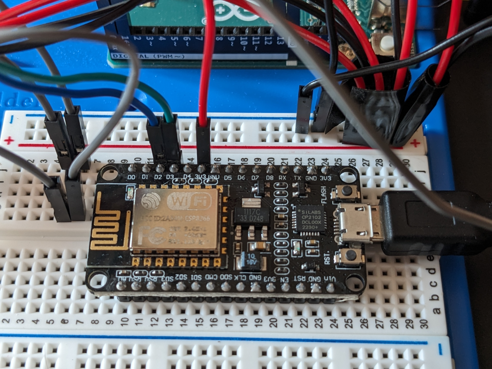
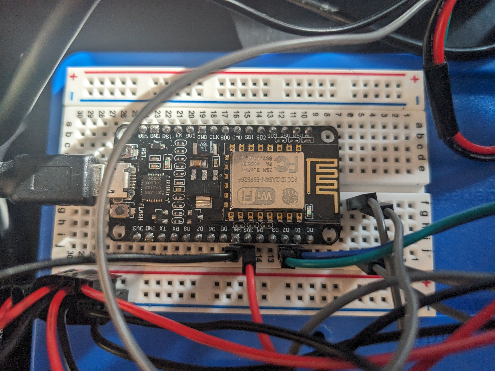
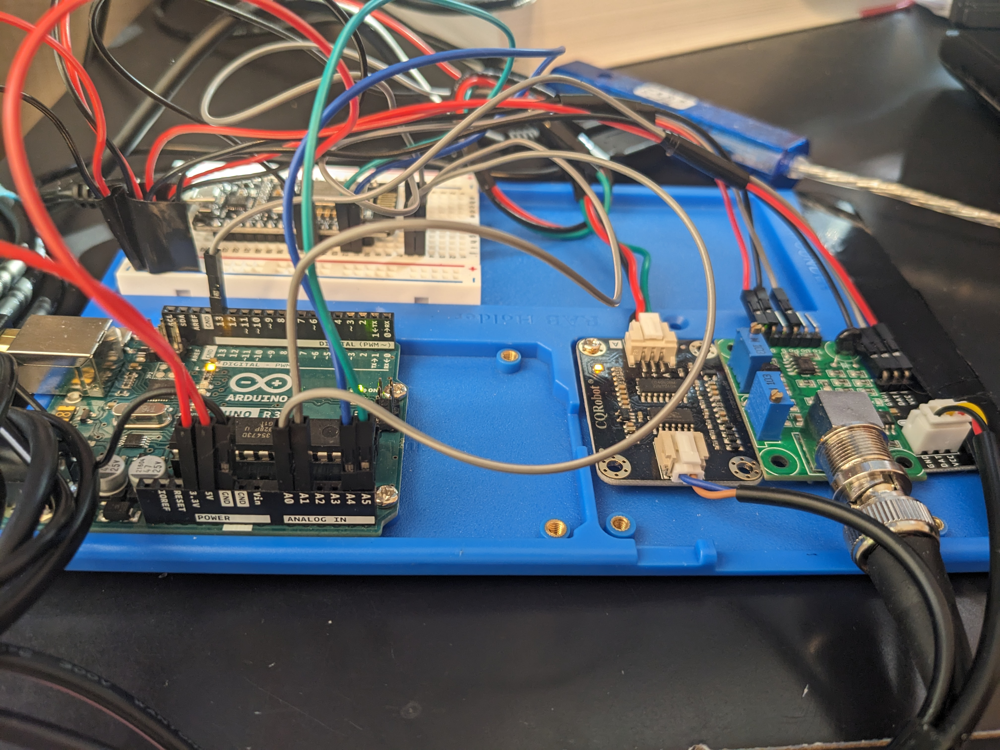
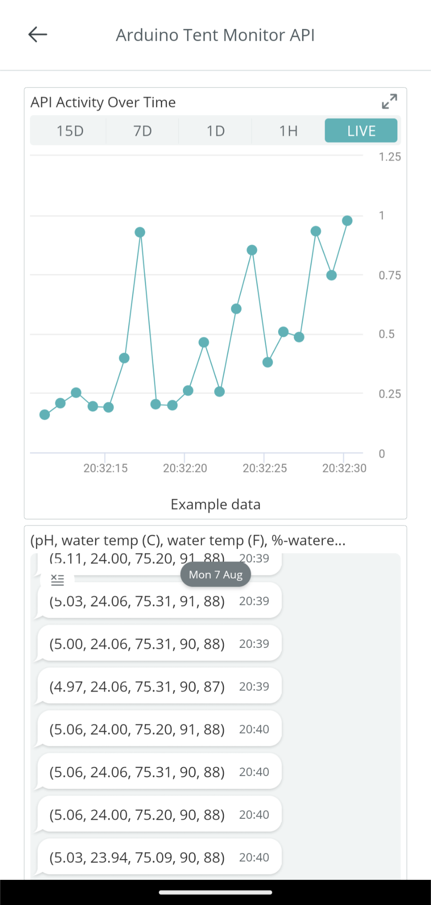
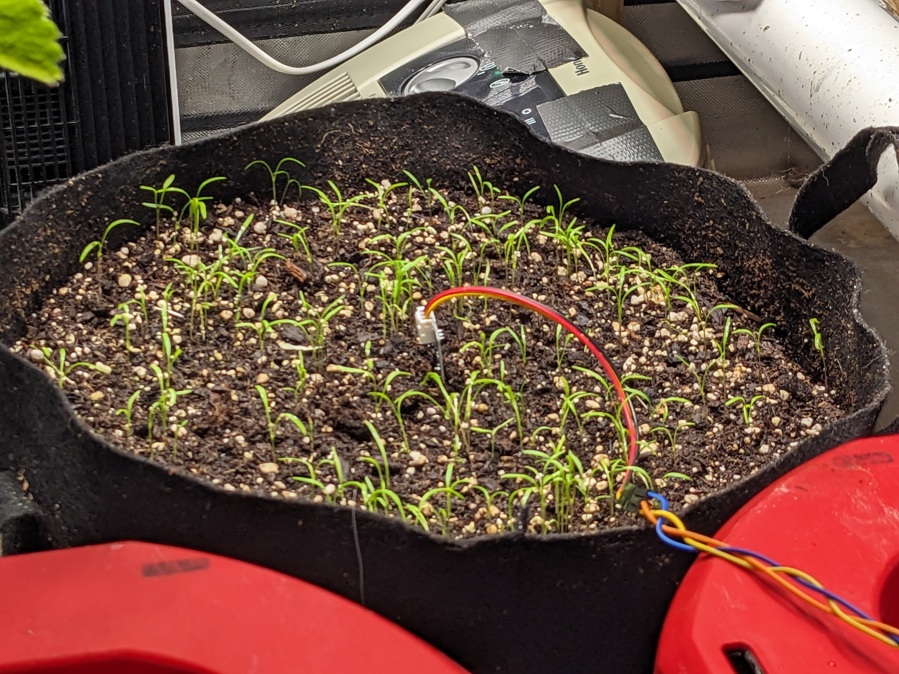

Week 6: Breadboard Wiring, Part Replacements, and Discovering Microservice Architecture Patterns.
Week 6 was mainly spent assembling the Greenhouse monitor breadboard circuit and investigating architecture patters to use with my ESP8266 transceiver module. I begain exploring microservice architectures with the help of a Udemy course: "Build, deploy, and scale an E-Commerce app using Microservices built with Node, React, Docker and Kubernetes". This lecture series pointed out key differences between microservice and monolithic architecture, and my aim is to develop the API accordance with these microservice patterns, in the hope of extending this application in the future using Node JS, React, or a different framework. My current architectural design idea is to write a driver program that will "harvest" sensor data at regular intervals and present this raw data to the serial bus where the messages can be read by the the recieving portion of the driver firmware and inserted as a well-constructed tuple into a SQL transaction database, then transform this raw sensor data into an aggregate measurement and populate an OLAP style data warehouse file via a trigger in order to satisfy the server GET and/or POST requests. I am hoping that further research into REST API architecture involving arduino sensors will offer further clarity.
Breadboard Basics

Figure 1.) Basic Arduino Breadboard circuit pinout diagram. The top and bottom power rails (red) are divided into 3.3V and 5V power supply sections. Ground rails are shown in blue and can be used by any circuit component requiring a ground. The center (green) pinout locations are reserved for circuit components, and for our intents and purposes acts as a serial communication hub.
Assembling, Calibrating, and Testing the pH Meter Function
First, I tracked down the following tutorial mentioning some of the parts I have on hand: "pH meter Arduino, pH Meter Calibration, DIYMORE pH Sensor Arduino Code". I decided to wire the positive and terminal leads to the breadboard in preparation for the serial hub integration that will come later in the project. Here is another article that came in handy: pH probe.
Once I placed the connections and verified a response from the pH sensor, I lined out a calibration curve using vinegar and milk as my stand-in calibration solutions (real calibration solutions are on the way) and applied a short circuit connection to the pH probe terminal to register a neutral (i.e., pH = 7) response from the pH probe. The result is a remarkably stable and robust pH meter, and I have been using it to monitor and adjust the pH of the nutrient solutions in both of my hydroponic systems! The program I currently have relays updates to the IDE serial monitor at a rate of around 2 Hz (2 updates/second). I also have a working driver sketch for the temperature probe, and I plan on combined these two programs, along with others in the final version of the driver sketch program.
Success!! A Working pH Meter and Thermocouple.

Figure 2.) One of the most exciting moments this week was getting the drivers for the pH meter and thermocouple up and running. Since I don't have any real calibrating solutions on hand at the moment, I decided to calibrate the pH probe using milk and vinegar. As awful as that sounds, the attempt went well and I managed to produce some surprisingly accurate values when I tested it with an off-curve calibration standard (pH=6.86).
// Hardware
const int analogInPin = A0; // Identity of the analog recieving pin
// Variables
float average_voltage, slope, intercept, pH;
int buf[10],temp,NUM_BINS,avg_reading;
unsigned long int avgValue; // declare the aggregator variable used to sample the pH.
// establish serial communication rate.
void setup() {
Serial.begin(9600);
}
// driver main loop.
void loop() {
for(int i=0;i<10;i++){
buf[i]=analogRead(analogInPin); // read the analog value from analog-in pin "A0", place the value in the buffer.
delay(30); // delay the next read for 30 ms.
}
for(int i=0;i<9;i++){
for(int j=i+1;j<10;j++){
if(buf[i]>buf[j]){ // This nested for-loop maintains buffer in ascending sorted order.
temp=buf[i];
buf[i]=buf[j];
buf[j]=temp;
}
}
}
avgValue=0;
for(int i=2;i<8;i++){ // sampling the middle 6 points of the sorted buffer reduces the effect of outliers.
avgValue+=buf[i];
}
int NUM_BINS = 6; // number of samples in the next average calculation.
int avg_reading = float(avgValue)/NUM_BINS;
float average_voltage = avg_reading*(5.0/1024); // discretize the phVoltage reading over a range of 5 volts.
float slope = -5.7; // slope of the calibration curve. represents the linear correlation between voltage and response. (Slope value given in the example code: -5.70)
float intercept = 29.68; // intercept. adjust to calibrate.
float pH = ( average_voltage * slope ) + intercept; // calculates the final pH value. Incercept is adjusted during calibration.
Serial.print("Current pH: ");
Serial.println(pH);
delay(500);
}
Week 7: Integrating Sensors and Formatting the Serial Monitor Output
During Week 7 I was able to combine drivers for pH, temperature and total dissolved solids (TDS) and collect streaming measurements from all three instruments at once in the serial monitor. I learned about baud rate synchronization this week when I discovered that Arduino TDS sensors typically operate at a 115200 baud rate frequency, which is 12 times higher than the pH or temperature probes typically operate. I managed to compensate for these differences in communication rates by modifying the TDS to operate at a 9600 baud rate, at the cost of some additional start-up time owing to the increased buffer time needed to collect TDS sensor measurements.

Figure 3.) Circuit connections for the pH/temperature/TDS serial monitor device.
Temperature, pH, and TDS Driver Sketch (Serial Output)
TDS driver functions shown below, were adapted from Arduino with TDS Sensor (Water Quality Sensor)
/* Thermocouple libraries, hardware, and driver variables.*/
#include OneWire.h
#include DallasTemperature.h
const int SENSOR_PIN = 13; // Arduino pin connected to DS18B20 (temperature) sensor's DQ pin
OneWire oneWire(SENSOR_PIN); // create a oneWire instance
DallasTemperature tempSensor(&oneWire); // pass oneWire to DallasTemperature library
float tempCelsius; // temperature in Celsius
float tempFahrenheit; // temperature in Fahrenheit
/* pH sensor libraries, hardware, and driver variables.*/
float average_voltage, slope, intercept, pH;
int buf[10],temp,NUM_BINS,avg_reading;
unsigned long int avgValue; // declare the aggregator variable used to sample the pH.
const int analogInPin = A0; // pH analog-in.
/* TDS sensor libraries, hardware, and driver variables.*/
#define TdsSensorPin A1
#define VREF 5.0 // analog reference voltage(Volt) of the ADC
#define SCOUNT 30 // sum of sample point
int analogBuffer[SCOUNT]; // store the analog value in the array, read from ADC
int analogBufferTemp[SCOUNT];
int analogBufferIndex = 0;
int copyIndex = 0;
float averageVoltage = 0;
float tdsValue = 0;
float temperature = 16; // current temperature for compensation
// median filtering algorithm
int getMedianNum(int bArray[], int iFilterLen){
int bTab[iFilterLen];
for (byte i = 0; i bTab[i + 1]) {
bTemp = bTab[i];
bTab[i] = bTab[i + 1];
bTab[i + 1] = bTemp;
}
}
}
if ((iFilterLen & 1) > 0){
bTemp = bTab[(iFilterLen - 1) / 2];
}
else {
bTemp = (bTab[iFilterLen / 2] + bTab[iFilterLen / 2 - 1]) / 2;
}
return bTemp;
}
void setup() {
Serial.begin(9600); // initialize Baud rate at 115200 (min. rate limit imposed by TDS sensor)
tempSensor.begin(); // DallasTemperature class function
pinMode(TdsSensorPin,INPUT);
}
// driver main loop.
void loop() {
static unsigned long analogSampleTimepoint = millis();
if(millis()-analogSampleTimepoint > 40U){ //every 40 milliseconds,read the analog value from the ADC
analogSampleTimepoint = millis();
analogBuffer[analogBufferIndex] = analogRead(TdsSensorPin); //read the analog value and store into the buffer
analogBufferIndex++;
if(analogBufferIndex == SCOUNT){
analogBufferIndex = 0;
}
}
static unsigned long printTimepoint = millis();
if(millis()-printTimepoint > 800U){
printTimepoint = millis();
for(copyIndex=0; copyIndexbuf[j]){ // this if statement manages the buffer in sorted order (usefule in e.g., monotonic and antimonotonic pattern recognition)
temp=buf[i];
buf[i]=buf[j];
buf[j]=temp;
}
}
}
avgValue=0;
for(int i=2;i<8;i++){
avgValue+=buf[i];
}
int NUM_BINS = 6; // number of readings in measurement
int avg_reading = float(avgValue)/NUM_BINS;
float average_voltage = avg_reading*(5.0/1024); // discretize the phVoltage reading
float slope = -5.7; // slope of the calibration curve. represents the linear correlation between voltage and response. (Slope value given in the example code: -5.70)
float intercept = 29.46; // intercept. adjust to calibrate.
float pH = ( average_voltage * slope ) + intercept; //
Serial.print("Current pH: ");
Serial.println(pH);
// print TDS, alternate message displays during start-up.
// Serial.print("voltage:");
// Serial.print(averageVoltage,2);
// Serial.print("V ");
if (averageVoltage == 0) { // tds takes a few seconds to stabilize. Alert the user about probe condition.
Serial.print("Acquiring TDS measurement... \n"); // this message is displayed until a response is generated from the TDS sensor.
}
else {
Serial.print("Current TDS:");
Serial.print(tdsValue,0); // will read "0ppm" until the TDS meter stabilizes
Serial.println("ppm");
}
// print Temperature (C + F)
Serial.print("Ambient Temperature: ");
Serial.print(tempCelsius); // print the temperature in Celsius
Serial.print("°C");
Serial.print(" ~ "); // separator between Celsius and Fahrenheit
Serial.print(tempFahrenheit); // print the temperature in Fahrenheit
Serial.println("°F");
delay(1000); // delay for the combined system
}

Figure 4.) Serial monitor output displaying the default start up TDS meter response. The pH meter has been calibrated and is currently held in a pH testing standard (6.86) that was not used in the calibration and has been used to house the pH probe for a couple of days.

Figure 5.) Serial monitor output displaying an initial measurement of the TDS probe after equilibration. This nutrient solution was replaced about 2 days ago, so this is TDS measurement should represent a nice baseline. The pH measurement is from 2-day old 6.86 pH buffer solution. The water from my refrigerator registers at 180ppm (TDS units) on this device.
An electromagnetic interference appears to occur in the pH probe whenever it is held in the same nutrient solution as the TDS sensor. This happens because of the way each meter performs its' task. TDS operates on a principle that is sometimes referred to as "amperage-driven voltage detection". Essentially, the TDS meter tests the conductivity of the solution by emitting tiny pulses of electric current and reading the voltage accross the anode/cathode gap. The pH probe uses the principle of passive voltage detection to measure the relative concentration of cations (i.e., H+) and anions (i.e., OH-) in the solution. Placing the pH and TDS meters in the same solution causes the pH probe to act erratically, due to the percieved abundance of negative charge released by the cathode of the TDS sensor. This excess current registers in the pH meters' passive voltage scale as an abundance of anions in solution, causing it to report a falsely elevated pH.
Given this observation it appears reasonable to assume that maintaining the pH and TDS probes on seperate Baud frequencies could offset the effect of this interference. After testing this hypothesis, I concluded that the pH and TDS meter can share no more than two of the following three testing conditions with each other: {baud_rate, test_solution, time_period}. Running the sensors on different baud rates is not an option, because the serial monitor can maintain only one Baud rate frequency at a time. Making time-scale decoupling the only option for creating a stand-alone measurement system with all three sensors.
Since I maintain both of my hydroponic systems identically, the measurements these systems produce may be considered equivalent within a negligible margin of error (i.e., less than 10%). Given this fact, I have decided to temporarily resolve this system timing issue by placing the TDS sensor in the other system reservior, which should provide a reasonable "best of both worlds" solution at the cost of staking the accuracy of these measurements on the precision of my solution preps.
This should provide a relatively accurate estimate of system pH and TDS measurements in each unit, while allowing the pH and TDS sensors to remain online and operate simultaneously. I plan to revisit this issue of time-scale decoupling once the online API, dashboard, and database have been developed.
Week 8: Building Full-Stack Web Applications Using Node.js, REACT, and Firebase (by Google)
This week I uncovered the following resources for designing a REST API service architecture for the Arduino greenhouse monitor. Each of these tutorials was specifically chosen to match the type of ESP-8266 WiFi transceiver I have on hand. Firebase is a backend cloud computing service and application development platform sponsored by Google.
- ESP8266 NodeMCU: Getting Started with Firebase (Realtime Database)
- ESP8266 NodeMCU with Firebase – Creating a Web App
- Hosting REACT application using GitHub Pages (GitHub Tutorial Repository)
Figure 6.) Week 8 was spent finding the "perfect" API framework for the Arduino REST API Monitor. After searching for "ESP-8266 API architectures" and narrowing the results to match the model of my ESP-8266 transceiver chip, I found a set of articles about Ardunio ESP-8266 and Firebase IOT web app development package. The Firebase system provides a series of "node module" template classes that can be used to construct various microservice-based web, mobile, and IOT applications. The Firebase system is renowned for the relative ease with which developers can expand their applications using microservices. The Firebase system is a very complex system of libraries containing common architectural design choices and a suite of development tools.
The process of learning to use Firebase has so far involved downloading multiple libraries (including node modules) into a subfolder of my project repository using Unix terminal shell commands. Finding these articles required a solid 3 or 4 hours of research, perhaps evenly divided betweeen the time spent searching for online articles, eliminating the bad ones, and working through the ones I could use. Due to this unexpected time expenditure, I have not made any substantiative changes to the device or API this week. Instead, the majority of this week's efforts was dedicated to project planning.
Status: I am currently bookmarked about halfway through the second article, pausing briefly to digest the first half of the tutorial series: "ESP8266 NodeMCU: Getting Started with Firebase (Realtime Database)" , a document that I did not uncover until reading most of the second article: "ESP8266 NodeMCU with Firebase – Creating a Web App", which I will need to complete to integrate the ESP-8266 with the greenhouse monitor.
If you would like to learn what Firebase please check out the following video.
Week 9: Exploring Arduino ESP-8266 (12E), Google Firebase, and PlatformIO
Week 9 was dedicated to the investigation of cloud-based API services, Arduino ESP-8266 WiFi hardware and sketch libraries (e.g., SoftwareSerial, NodeJS, NodeMCU, etc.), Google Firebase (live database API resource), and a new VSCode IDE platform for managing Arduino projects called "PlatformIO".
Figure 7.) The most recent objective of the Greenhouse Monitor REST API project involves establishing a database connection with the ESP-8266 (12E) Wifi tranceiver to push data to a cloud based API resource that can be read by (e.g.) REACT Hooks at a later stage of the project. Completing this stage of the project will involve establishing a TX/RX-based serial connection between the Arduino Uno and the ESP-8266 Wifi device.
Google Firebase, PlatformIO, and ESP-8266 (12E) WiFi Libraries
The tutorials that I lined out last week turned out to be helpful, just not in the way I thought they would be.
The tutorials I found for connecting the ESP-8266 to a live database hosted by the Google Firebase platform were not as straightforward as they first appeared. After a few honest attempts at reproducing thier source code and device configuration, I realized that this stage of the project would not be as simple as following a few simple tutorials. The tutorials did turn out to be useful for highlighting several of the missing tools in my current Arduinio IOT arsenal, leading to progress in the development of the WiFi Greenhouse Monitor REST API Project.
The first benefit I derived from these tutorials was an past-due introduction to an IDE system called PlatformIO. PlatformIO is a tool suit that enables IOT application developers to organize sketches within a platform-independent environment and apply version control using Git. The package suite offers numerous other tools; including gcc and g++ compilers, linters, board managers, library managers, GitHub extensions, unit testing frameworks, and a whole lot more. Andriod, IOT, and IOS developers use PlatformIO to organize projects, fulfill software licensing standards, and prepare thier applications for production. I like how easy it is to set up project folders, load project-specific library resources, test hardware connections, and handle version control using GitHub. Although the interface is very different, everything that can be found in the Official Arduino IDE can be found in PlatformIO.
Figure 8.) Snapshot of the PlatformIO developer toolkit inside a VSCode IDE. PlatformIO hosts a full suite of developer tools for IOT, Andriod, and IOS projects.
The downsides of PlatformIO include its' relatively large project folder sizes and a less-than-intuitive file management system that can really eat up memory if care is not taken when creating new projects and/or sketches. PlatformIO has a sophisticated toolset that is perhaps better suited to the professional developer than the ameteur hobbyist. One might say that relative ease of project creation in PlatformIO comes at the expense of a somewhat more complicated file management system for handling the resulting files. Thus, moving forward, I will prefer to use the Arduino IDE for rough sketches and PlatformIO for developing the subsequent, stable software.
The second thing I learned, was how to create a free, live-stream database resource for the REST API. Firebase offers a tier of free-service that offers tools that I can use to host a set of cloud-based sensor variables that should be relatively easy to pull in with a REACT hook. Unfortunately, I was unable to establish a true database connection with the ESP-8266 this week, as my time was spent downloading drivers and libraries, setting up external resources, investigating prospective server architectures, etc. Right now, I have the ESP-8266 chip loaded with a sketch that instructs it to monitor its' D2 and D3 pins for GPIOS events being broadcast on COM8 serial monitor by the Ardunino Uno (i.e., the sensor data that we want to relocate to the cloud). This assists with next step of the project: creating an API resource page with REACT and NodeJS. Essentially, this database resource waits for the ESP-8266 Wifi tranceiver to transmit data that it will collect from the TX/RX ports of the Arduino Uno that was integrated with the analytical probe circuits in week 7
Figure 9.) Database rule definition for the Google Firebase REST API database resource. Data will be transmitted to this URL directly from the ESP-8266 endpoint monitoring device. The JSON formatted data hosting that this cloud-based resource provides will enable the REACT-based REST API to pull these data objects in under the context of a REACT hook, then abstract and render the resource in a browser window using a preconstructed DOM object(s).
Figure 10.) A photo of the USB serial connections used to program the Arduino Uno and ESP-8266 (12E) singleboard computer cards. Provided the correct sketch power-supply, each of these devices is capable of operating on a stand-alone basis, with little to no external computing resources (other than WiFI) required to drive the system. The Uno is running on COM8, while the ESP-8266 is running on COM9. Both boards are programmed using USB serial connections to my local laptop. NodeMCU and NodeJS are two popular frameworks for hosting an enormous variety of WiFi-enabled services. Including network adapter and/or router logic, DNS server systems, IP-address based resources (such as our monitoring unit), network switches, and more.
The other major breakthrough this week was loading the drivers and connecting the ESP-8266 tranceiver to my local WiFi network using WiFi login credentials. The primary obstacle in getting data exported to the cloud this week was establishing a serial connection between the Uno and ESP-8266. After investigating a LOT of tutorials on ESP-8266 (again, 12E), I realized that the Uno is built with a set of serial broadcast pins (labeled "TX"/"RX") that I should be able to use to send data from the Uno circuit to my ESP-8266, where the data can be repackaged and uploaded to the realtime database.
The very next step is to receive the sensor data packets on COM9 (see figure 8 for reference) and verify the receipt of data presented on the TX/RX communication ports of the Arduino Uno. This will involve transforming the TX pin into a broadcast object in the Uno boards' existing driver code, then packaging the pH/TDS/Temperature data into a serial packet and presenting it to the GPIOS pins that are already listening for input on the ESP-8266(12E) serial monitor. All Baud rates are currently set at 9600.
After this serial connection has been established, I will need to repackage the data within the ESP-8266 logic and invoke a call service using a Node.js or NodeMCU object and submit a POST request to the Firebase DB URL address (after providing the appropriate credential, of course). The last step in setting up the API database resource will probably involve configuring the settings of my realtime database resource. Then, it is on to the final stage of the project, which involves programming a single-page web application in REACT to pull in the JSON formatted database resource and present it to the user.
Until next time!
Figure 10.) TX/RX serial communication ports, which will be used for broadcasting the data on COM8 to the ESP-8266 WiFi transceiver.
Figure 11.) The INCORRECT ESP-8266 (12E) Breadboard jumper cable configuration for serial monitoring on the ESP. Owing to complexities in the inner-workings of the ESP8266, GPIOS communication is only available on the D1 and D2 digital pins of this WiFi enabled chip.
Week 9 Reflection
Week 9 showed me that the complexity of this REST API project should not be underestimated. My first goal for week 10 will be to collect, format, and transfer data the packets containing the sensor information from the Uno to the ESP-8266 and verify this transmission using the serial monitor on COM9. After this, I will most likely be studying JSON transfer protocols to format the data for transmission to the realtime database. I expect this to be somewhat of a steep learning curve, given my relative unfamiliarity with JSON-based data systems.
Week 10: Establishing serial communication between NodeMCU and the Uno Sensor Harness
In week 10, I uncovered a set of GPIOS master-slave routines that I can use to establish a serial connection between the ESP8266 NodeMCU and the Arduino sensor harness and kick the data over to the NodeMCU server (code update will be posted soon). These GPIOS communication sketches will be used to transmit sensor data to the ESP8266, where it can be packaged and routed to the free-tier Google NoSQL database that I set up in week 8.
Please enjoy this rough draft video explaining this week's activities and findings.
This fabulous set of sketches is presented courtesy of the opensource web tutorial located at https://www.electronicwings.com/nodemcu/nodemcu-i2c-with-arduino-ide , and contains the logic required to establish the mission critical GPIOS connection between the Arduino Uno and ESP8266-12E NodeMCU device. It took a long time to find these sketches!
Figure 12.) Updated physical connections to accommodate the master-slave communication-transfer protocol between the Arduino Uno and ESP8266-12E (green cable = Tx, blue = Rx).
Week 11: Got It! Recieving Data Tuples at NodeMCU from the Uno Slave Sensor Harness Over GPIOS.
Please enjoy a short video describing this week's discoveries.
Week 12: Saving JSON-formatted Data to a Google Cloud Real-time Database (RTDB) Service
This week's exciting conclusion to the 12-week Arduino REST API Greenhouse Monitor Project involved formatting the tuples that were successfully collected at the NodeMCU (ESP8266-12E) GPIOS interface last week. After taking a hard look at the fine print in the Google Firebase terms and conditions, I decided to dump Firebase and go with the Arduino IOT Cloud Service instead (Arduino offers a really really free cloud plan, https://docs.arduino.cc/arduino-cloud/ for more information.)
Here is a YouTube video explaining this week's progress on the API monitor project.
The monitor is working as expected, I can even view the real-time stat's usig the Arduino IOT application on my phone! However, the API is still a bit less stable than I would prefer (more about this shortly).
Figure 13.) The API's response was unstable when the cloud connection was first established, but began to even out over time. Both boards still depend on my local laptop bus for power.
Figure 14.) The new capacitive soil sensors prevent over-watering. My latest batch of carrot seedlings certainly appear to appreciate the extra attention. The second to last and last tuple variables represent the current water saturation of my green onions and finger carrots, respectively.
Week 12: Project Overview and Summary
Now it's time to examine how the project went compared with the timeline I set for myself in the project proposal.
(GOAL) Week 1: Initial research, project design, and material ordering.
These goals were certainly accomplished on time as they are included in the outline and proposal.
(GOAL) Week 2-5: Complete the Freenove Arduino Project Board Tutorial.
This goal turned out to be a tad unrealistic under the time constraints of 3-4 hours per week. I was able to complete several of the
FreeNove Project Board Tutorials however, and I feel that I was able to cover the basics required to complete this project.
(GOAL) Week 6: Develop the Device Blueprint and Assembly Plan
I did not get around to designing an true circuit diagram for my IoT device, primarily because the device was in development for most of the
project timeline. I realize now that circuit diagrams are more useful for specifying the connections of well-established devices.
(GOAL) Week 7: Assembling, calibrating, and testing the meter functions.
This aspect of the project was invovled in nearly every step of realizing the device concept. I was able to incorporate pH, TDS, temperature, and capacitative
soil moisture sensors into the Uno board harness. I later determined that I was collecting a null response from the TDS sensor (presumably because it is broken),
and so this probe was removed sometime later in the project.
(GOAL) Week 8: Streaming Data with Bluetooth.
Realizing that I actually had very limited use for bluetooth capability in my IoT endpoint device, I decided this time would be better spent learning about
microservice architecture patterns that would enable me to configure the JSON database endpoint in week 10 and 11 of the project.
(GOAL) Week 9: Streaming Data with Wi-Fi.
This goal was definitely accomplished, as I am now able to read data uploaded to a database URI through my local area WiFi router. API endpoint is currently
demonstrating an average availability of about 0.70 out of 1.0.
(GOAL) Week 10: Exporting Data as SQL, XML, and JSON
It was not necessary to format the data using JSON, XML, or SQL during this project. Although I have often thought of including and
onboard memory card and populating an SQLite database file with sensor data that I can view, manipulate or aggregate using SQL queries.
So far however, I have not had many reasons to investigate this option.
(GOAL) Week 11: Developing a Simple Web Page to Display the Sensor Data.
Handling the physical connections, sketch programms, library packages, and JSON database resources turned out to present a big enough challenge
that I was not able to develop a REACT framework within the specified timeframe. This item is next on my list, however, and you will find updates
posted at this URL.
(GOAL) Week 12: Documentation, Wrap-Up, and Presentation.
Summary: My next steps will be to add an independent power connection to my "thing", to see if this improves the availability
of my API endpoint device. Then I will work on developing a REACT application that makes better use of my Greenhouse Monitor TentTuple.
This semester has been an absolute blast! Thank you all very much and have a wonderful fall semester!
What's Next For the Arduino REST API Monitoring Project?
I have a series of hardware and software improvements in mind for the upcoming weeks. Most of these ideas are in the early refinement stage, but some of the improvements might include installing an US outlet power adaptor to the Uno sensor harness and associated breadboard. This way, I can get this IOT device operating in a standalone condition, instead of relying on my local laptop bus. At the moment I cannot operate the device unless my laptop is powered on, I need to change that.
The firmware that I developed for this project appears remarkably fault-tolerant. The very nature of these programs seems to imbue them with an almost indomitable will to connect with the next device. The reason that a standalone power source is so important is that if this device is able to boot up and operate on its' own, then not even a power outage can stop this bugger from updating my remote tuple variable. Removing the devices' dependency on my local computer could also help to improve the availability of my API service, since it appears that the current availability has been hovering at a little less than 50% over the past 12 hours or so.
I would also like to synchronize and/or adjust the sampling rate at some of these devices. Currently the Uno collects data at a rate of 1Hz and the NodeMCU draws and relays tuples at a sampling rate of 2Hz. From what I have read, the coordinated frequencies of LAN and WAN based networking events can be critical for an API such as this. The general idea here is to pipeline the instructions as efficiently as possible.
Now that my data tuple is up in the cloud, I am free to desgin REACT Web Hooks that can help me pull in this remote resource and use it in the context of a REACT native, Andriod, or basic web application to support (e.g.) UX/UI Dashboards and interaction with subsequently installed hardware devices.